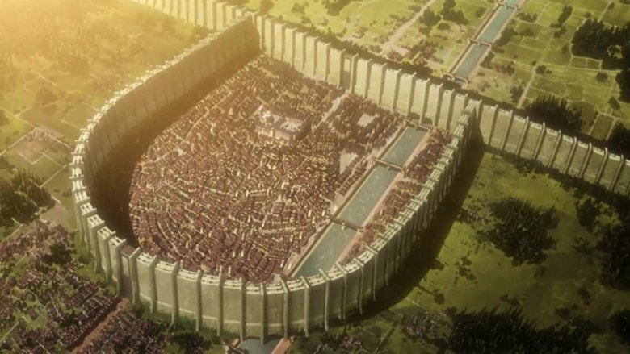
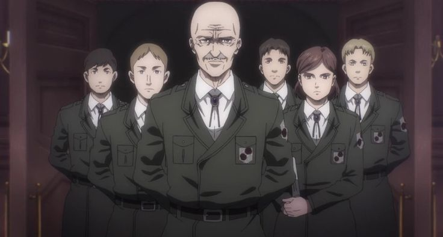

Shingeki no Kyojin
In a world where humanity hides behind massive walls to survive against man-eating Titans, young Eren Yeager swears vengeance after witnessing unimaginable tragedy. What begins as a fight for survival slowly transforms into a war that questions freedom, morality, and the true nature of the world itself.
Attack on Titan, created by Hajime Isayama, begins as a survival horror narrative but gradually evolves into one of the most complex political and philosophical manga of the modern era. At first glance, the story presents humanity trapped inside massive walls to protect themselves from giant humanoid creatures known as Titans. However, what seems like a straightforward battle between humans and monsters slowly transforms into a layered exploration of freedom, nationalism, war propaganda, inherited hatred, and the consequences of absolute power.
The walls symbolize both physical and psychological confinement. Humanity believes it is safe, yet that safety is built on ignorance. As the story unfolds, readers discover that the real enemy is not merely the Titans but the structures of control, secrecy, and fear that shape society. This gradual shift in perspective is one of the defining strengths of the series.

Few protagonists in manga history undergo a transformation as controversial and emotionally charged as Eren Yeager. Introduced as a passionate and reckless boy who dreams of freedom, Eren’s motivations initially appear simple: destroy the Titans and protect humanity. Yet as he uncovers hidden truths about his world, his ideology evolves into something far more radical.
Eren begins to question whether freedom can ever exist without domination. Is liberation possible without sacrifice? As the narrative progresses, his decisions grow darker and morally ambiguous. He becomes a figure who blurs the line between savior and destroyer, forcing readers to confront uncomfortable questions about justice and vengeance.
As the series expands beyond the walls, it introduces global politics, rival nations, and historical oppression. Attack on Titan recontextualizes its earlier narrative, revealing that the Titans themselves are victims of inherited conflict. Entire populations are manipulated by propaganda, taught to hate enemies they have never met.
Isayama crafts a world where every faction believes it is justified. There are no purely good or evil sides—only perspectives shaped by history. The series explores how governments maintain power through fear, how war becomes cyclical, and how children inherit conflicts they did not create.

Throughout the manga, recurring symbols reinforce its central themes. The Titans represent overwhelming, uncontrollable forces—fear, war, trauma. The walls symbolize ignorance and isolation. Birds frequently appear as a metaphor for freedom, contrasting humanity’s confinement.
Perhaps the most striking theme is the concept of inherited sin. Characters are born into roles predetermined by events of the past. The series repeatedly asks whether individuals can break free from cycles of violence or if they are doomed to repeat them.
Freedom, in Attack on Titan, is never simple. It comes with unbearable cost. The question becomes not how to obtain freedom—but whether the world can survive its pursuit.
Attack on Titan became a global phenomenon not merely because of its action sequences but because of its moral complexity. It sparked debates about nationalism, genocide, and ethical warfare in mainstream media discussions. The manga challenged readers to question their allegiance to protagonists and forced them to empathize with former enemies.
Its ending remains one of the most discussed conclusions in modern manga. Some readers praised its realism and tragic inevitability, while others criticized its direction. Yet regardless of perspective, the impact of the series is undeniable.
Attack on Titan redefined what mainstream shonen storytelling could achieve. It demonstrated that commercial manga can engage with heavy philosophical themes without losing popularity. Its influence can already be seen in newer works that dare to explore darker, morally complex narratives.